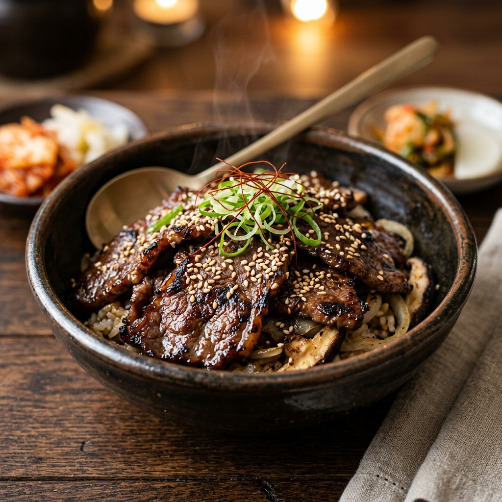
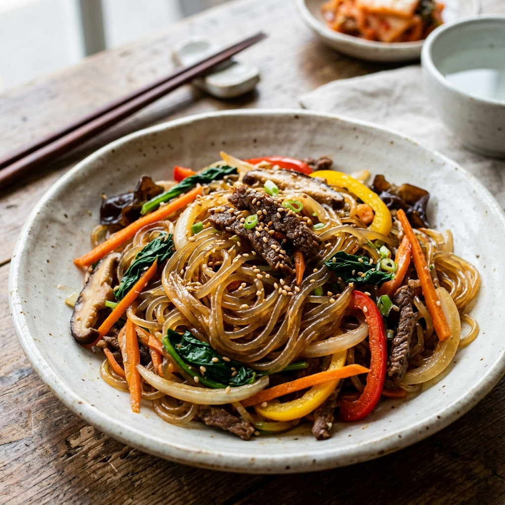
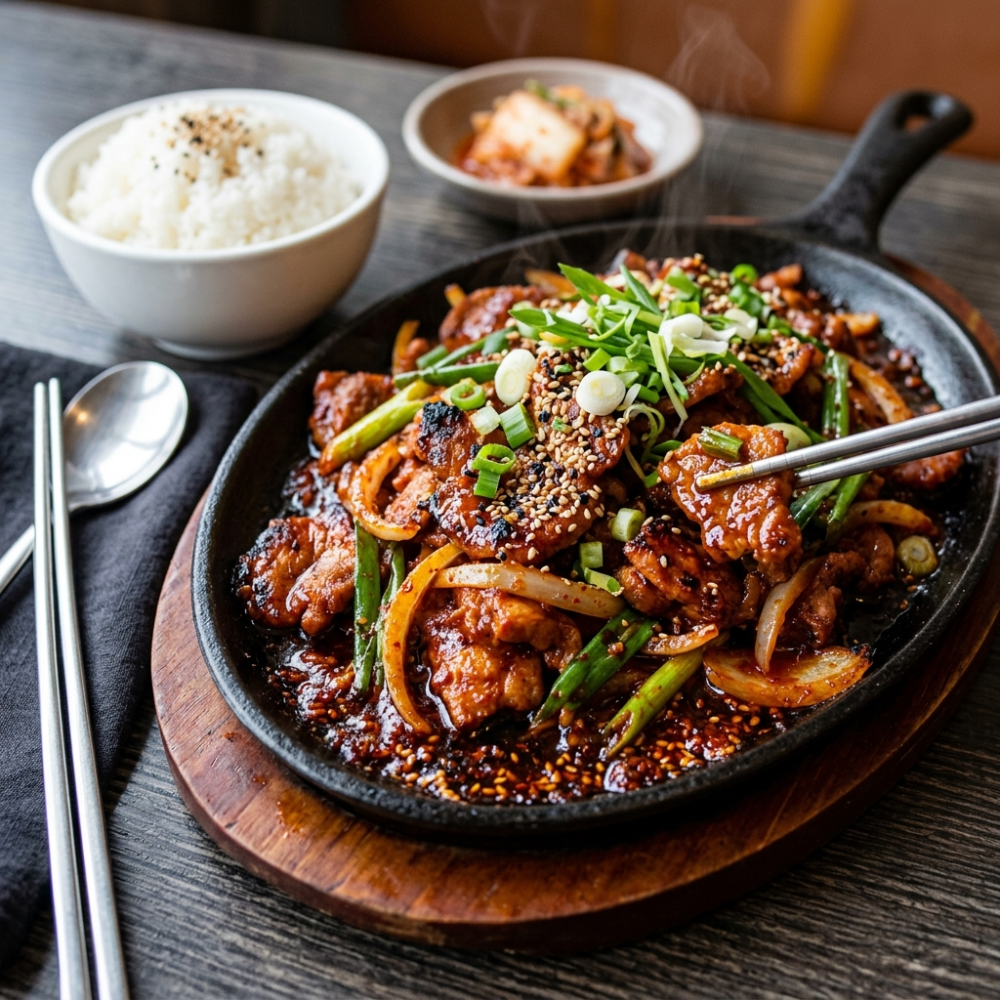

Curated Menu
Featured Recipes
Recreate the iconic and easy flavors of Korea.

Bulgogi (불고기)
Thinly sliced tender beef marinated in a perfectly balanced sweet and savory soy sauce mixture.

Japchae (잡채)
Chewy glass noodles tossed in sweet soy sauce sesame glaze with colorful vegetables.

Jeyuk-Bokkeum (제육볶음)
Juicy sliced pork stir-fried in a fiery Gochujang sauce, bursting with deep flavor.
10-Min Super Easy Home Cook
Pork Belly & Bean Sprouts (Daepae-Samgyeopsal Sukju-Bokkeum)
Crispy thin pork belly slices stir-fried with crunchy mung bean sprouts in a savory garlic-oyster glaze. Extremely addictive!
⚡ Super Fast Steps:
- Pan-fry 200g of thin pork belly with sliced garlic till golden brown. Remove excess oil.
- Add 1 tbsp soy sauce, 1 tbsp oyster sauce, and 1/2 tbsp sugar over the meat.
- Throw in a big handful of fresh bean sprouts (Sukju) and stir-fry on high heat for just 1 minute.
- Turn off the heat, drizzle sesame oil, and top with black pepper!
🍺
K-Food Insider Tip:
This dish is a legendary match with 'Somaek' (a classic Korean cocktail of Soju mixed with cold beer). The rich, crispy pork and refreshing ice-cold drink create an absolutely heavenly combination!